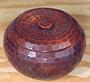
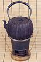
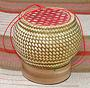

Euro-American & General CuisinesThe items listed here are for Euro-American cuisines, but many are just as useful for other cuisines worldwide. Of course, "Euro-American" includes all the Americas, Australia, New Zealand, Hawaii, the Philippines, and Western enclaves in many other countries. Corn Dish / Corn HornsGreatly enhances pleasure of eating Corn On The Cob. Salad Bowls / Salad ServingBowls and tools to enhance your salad enjoyment. Tortilla / Chapati WarmerThis is the kind that actually works. South Asian- India, Sri Lanka, Bangladesh, Pakistan
Thali & KatoriThe formal place setting for South Asia, especially India. Chinese Cuisine- Yunan to ManchuriaTable Place UtensilsThese are the Traditional Chinese table utensils. Japanese CuisineTable Place UtensilsThese are the Traditional Japanese table utensils.  Rice Serving BowlThis is a traditional Japanese rice serving bowl, carved out of wood, and usually in this exact form.  Tea Ceremony KettleThe Japanese Tea Ceremony is a very formally structured event, with special equipment, and properly a separate Tea House, or at least a separate room. Southeast Asian CuisinesRice Serving BasketThis is the traditional basket in which to serve Sticky Rice in Laos and Issan Thailand. |